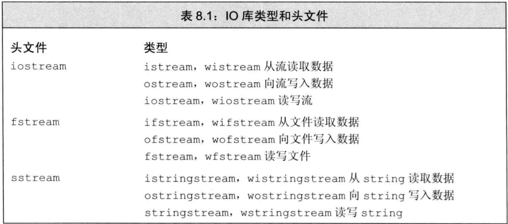
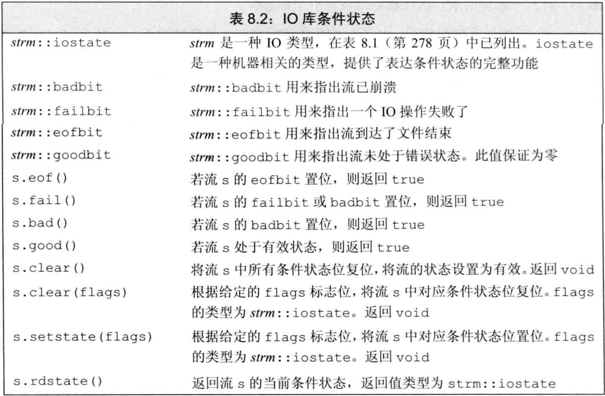
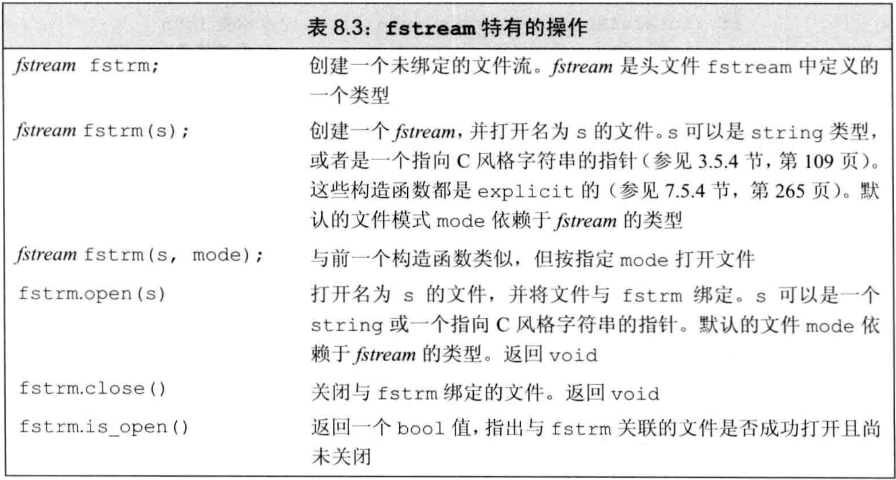
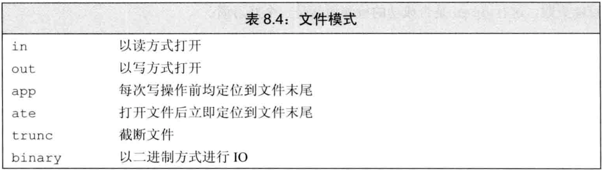
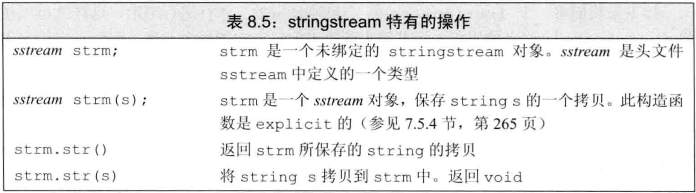

C++ primer 第8章 IO库
文章目录
- C++语言不直接处理输入输出，而是通过标准库中的一组类来处理IO
- 这些IO类可从设备读写数据，设备可以是文件、控制台窗口等。还有一些类型允许内存IO，即读写字符串
- 1.2节介绍的IO库：
istream（输入流）类型，提供输入ostream（输出流）类型，提供输出cin，是istream对象，从标准输入读取数据cout，是ostream对象，向标准输出写数据cerr，是ostream对象，用于输出错误信息，写到标准错误>>运算符，从istream对象读输入<<运算符，向ostream对象写输出getline函数，从给定的istream读取一行数据，存入string对象
IO类
- 实际程序不仅要从
控制台窗口进行IO操作，还需要读写文件，而且用IO操作处理字符串也很方便。另外，程序可能需要读写宽字符文本 - 标准库的IO类型在3个头文件中：
iostream头文件定义了读写流的基本类型fstream头文件定义了读写命名文件的类型sstream头文件定义了读写string对象的类型
- 表8.1是标准库中的这些IO类型和头文件 
- 为支持宽字符语言，标准库定义的IO类也可操纵
wchar_t类型数据，它对应的类型和函数名以w开始 - 设备类型和字符宽度不会影响IO操作，例如
>>运算符对控制台窗口、文件、字符串都可用，对char和wchar_t也可用 - 通过
继承，标准库可忽略这些不同设备和不同字符宽度的流的差异。利用模板，可以使用具有继承关系的类 - 声明一个类
继承自另一个类，则通常可将派生类当作基类来使用 - 类型ifstream和istringstream都继承自istream，即可以像使用istream对象一样使用ifstream和istringstream对象
- 本节所述的流特性都可无差别地应用于普通流、文件流、字符串流，以及char和wchar_t版本
IO对象无拷贝或赋值
- 不能拷贝IO对象，不能给IO对象赋值，不能将形参或返回类型设为流类型
- 进行IO操作的函数通常以
引用方式传递和返回流 - 读写IO会改变其状态，故传递和返回的引用不能const
条件状态
- IO很可能发生错误。一些错误可恢复，另一些错误在系统深处，超过了程序可处理的范围
- 表8.2定义的函数和标志可帮助访问和操纵流的
条件状态 - 流发生错误的例子：从外部读到的类型和程序中需要的类型不匹配时，流进入错误状态
- 一个流一旦发生错误，其上后续的IO操作都会失败。只有无错误才能继续读写
- 使用流时应检查状态，将其当作条件。如
while(cin>>word)，其中>>返回流的状态，操作成功则流有效 - 当流作为条件时，只能知道是否有效，不知道发生了什么
- 表8.2中，定义了一个机器无关（？）的
iostate类型，可表达流的状态，这个类型是标志位的集合 - 表8.2中，定义了4个iostate类型的constexpr值来表示特定的位模式。这些值用于表示特定的条件状态，可与位运算符一起使用来一次检测或设置多个标志位
badbit表示系统级错误，不可恢复。一旦它被置位，流就无法使用failbit在发生可恢复错误时被置位，如读取类型错误- 读到EOF处，
eofbit和failbit都被置位 goodbit的值为0表示无错误
- badbit、failbit、eofbit中的任一个被置位，则检测流状态的条件都会失败
- 表8.2中，定义了一组函数来查询这些iostate标志位的状态，
good()在所有错误位均未置位时返回truebad()、fail()、eof()均在对应错误位被置位时返回true- badbit被置位时，
fail()也会返回true
- 将流当作条件时，等价于判断
!fail()，而eof()和bad()操作只能表示特定错误 - 表8.2中定义的
rdstate()操作返回iostate类型值，表示当前状态 - 表8.2中定义的
setstate()操作接受iostate类型值，将给定的条件位置位，表示发生了对应错误 - 表8.2中定义的
clear成员函数有两个版本：clear()清除所有错误标志位clear(flags)接受iostate类型值，表示流的新状态
- 例子：rdstate、setstate、clear
|
|
管理输出缓冲
- 每个输出流都管理一个缓冲区，用于保存程序读写的数据
- 由于写设备很耗时，操作系统将程序的多个输出操作组合成单一的设备写操作，可大幅提高性能
- 导致
缓冲刷新（即数据真正写到设备/文件）的原因：- 程序
正常结束，缓冲刷新作为main的return的一部分 缓冲区满时刷新- 用操纵符如
endl、flush、ends显式刷新 - 输出操作之后可用操纵符
unitbuf设置流的内部状态，使其在每次输出都刷新缓冲。默认时cerr时unitbuf的，即cerr的内容立即刷新 - 一个输出流可能被
关联到另一个流。读写被关联的流时，关联到的流的缓冲被刷新。例如，cin和cerr关联到cout，故读cin或写cerr都将使cout刷新
- 程序
- 操纵符endl、flush、ends显式刷新:
endl输出换行并刷新flush直接刷新，不输出字符ends输出空字符并刷新
unitbuf操作符告诉流，接下来的每次写操作之后都进行flushnounitbuf操作符重置流，使其恢复默认刷新- 例子：endl、flush、ends、unitbuf、nounitbuf
|
|
- 若程序异常终止，输出缓冲不会被刷新。因此调试崩溃的程序时要保证输出数据确实被刷新
- 当一个输入流被关联到一个输出流时，任何从该输入流读取的操作都刷新关联的输出流
- 交互式系统通常应关联输入输出流，保证所有提示信息都在读操作前被打印
tie函数有两个重载的版本tie()返回指向输出流的指针，若未关联到流则返回空指针tie(ostream)接受一个指向ostream的指针，将自己关联到此ostream。用法如x.tie(&o)将流x关联到输出流o
- 每个流最多同时关联一个流，但多个流可同时关联到同一个ostream
- 例子：流的关联
|
|
文件输入输出
- 头文件
fstream定义了3个IO类来读写文件：- 类
ifstream从给定文件读数据 - 类
ofstream向给定文件写数据 - 类
fstream可读写文件
- 类
- fstream中的这些类型继承自iostream的对应类型，它们提供的操作类似cin和cout，即
<<、>>、getline等，以及8.1节中的所有操作 - 表8.3是fstream中比iostream新增的成员 
使用文件流对象
- 要读写文件时应定义
文件流对象，并将对象与文件关联 - 表8.3中定义的
open(s)将对象与文件关联，定位给定文件并视情况打开为读/写模式 - 创建文件流对象时可在构造函数中提供文件名
filename，此时open(filename)会被自动调用。在C++11之前，文件名只能是C风格字符串，C++11后文件名可是string对象或C风格字符串 - 在要求
基类对象的地方，可用派生类对象代替。例如，接受iostream引用/指针的函数，可用对应的fstream/sstream引用/指针来调用 - 可以先定义空文件流对象（默认初始化），再调用
open与文件关联 - 如果调用
open失败，则failbit被置位 - 对已经关联到文件的流再次调用
open会失败，并将failbit置位 - 如要将已经关联到文件的流关联到另一个文件，必须先用
close关闭已关联的文件 - 例子：fstream的open和close
|
|
- 当fstream被正确析构时（例如离开作用域），
close会被自动调用，关联文件自动关闭
文件模式
- 表8.4定义了每个文件流都有一个关联的
文件模式，用来指出如何使用文件  - 用open打开文件或用文件名构造文件流对象时，都可指定文件模式
- 指定文件模式的限制：
- 只可对ofstream或fstream对象设定
out模式 - 只可对ifstream或fstream对象设定
in模式 - 只有当out也被设定时才可设定
trunc模式 - 只要trunc未被设定，就可设定app模式。在
app模式下，文件总以out模式被打开 - 默认情况下，即使未指定trunc，以out模式打开的文件也会被截断，即默认用out即用了trunc。为
避免截断，可指定app模式，使数据追加到文件末尾；或指定in模式，同时读写。 ate和binary模式可用于任何文件流对象，且可与其他任何模式组合
- 只可对ofstream或fstream对象设定
- 每个文件流类型都定义了默认的文件模式：
ifstream关联的文件默认以in模式打开ofstream关联的文件默认以out模式打开fstream关联的文件默认以in和out模式打开
- 默认方式（out模式）打开ostream时，文件会被丢弃。因为out模式意味着同时使用trunc模式。保留已有数据的方法是显式指定
app或in模式 - 同一个流，每次用open关联到不同文件时，都可改变模式
- 例子：指定模式
|
|
string流
- 头文件
sstream定义了3个类型来支持内存IO，它们可读写string：istringstream从string读数据ostringstream向string写数据stringstream既可读string又可写string
- 头文件sstream中定义的类型都继承自iostream中对应的类型
- 表8.5是sstream中定义的类型的特有操作 
使用istringstream
- 用
getline逐行读取，每次读到的整行文本用istringstream读取单词
使用ostringstream
- 用
ostringstream逐步构造输出，最后一起打印